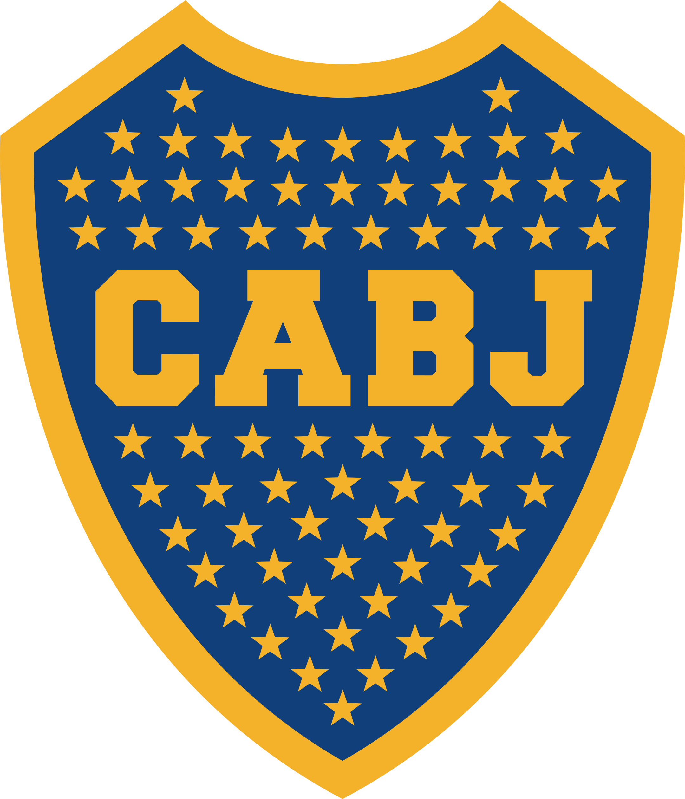

Boca Juniors
A equipe do Boca Juniors é a superpotência da Argentina, os Xeneizes têm 51 títulos conquistados em 116 anos de história. É importante destacar que o time é um dos mais vitoriosos no âmbito internacional, tendo, por exemplo, seis Libertadores e três Mundiais.